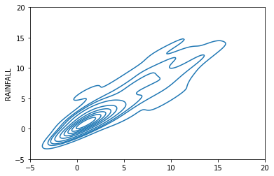
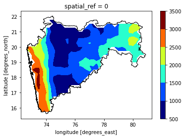

Creating a function to correct timestamps of GPM data and to mask the data w.r.t IMD data
Contents
import xarray as xr
import numpy as np
import geopandas as gpd
import matplotlib.pyplot as plt
import warnings
warnings.filterwarnings('ignore')
gpm = xr.open_mfdataset('../2005/*')
---------------------------------------------------------------------------
OSError Traceback (most recent call last)
Input In [2], in <cell line: 1>()
----> 1 gpm = xr.open_mfdataset('../2005/*')
File ~/miniconda3/envs/syed/lib/python3.10/site-packages/xarray/backends/api.py:873, in open_mfdataset(paths, chunks, concat_dim, compat, preprocess, engine, data_vars, coords, combine, parallel, join, attrs_file, combine_attrs, **kwargs)
870 paths = [os.fspath(p) if isinstance(p, os.PathLike) else p for p in paths]
872 if not paths:
--> 873 raise OSError("no files to open")
875 if combine == "nested":
876 if isinstance(concat_dim, (str, DataArray)) or concat_dim is None:
OSError: no files to open
imd = xr.open_dataset("_Clim_Pred_LRF_New_RF25_IMD0p252005.nc")
Creating a function to correct timestamps of GPM data and to mask the data w.r.t IMD data#
Also the coordinates of IMD data has been renamed to short and lower form, i.e., TIME –> time, LONGITUDE –> lon, and LATITUDE –> lat.#
def masked(gpm,imd):
'''
da1: data array to be masked
da2: maksed dataarray
returns: masked gpm dataarray
'''
gpm1 = gpm.copy()
gpm1 = gpm1.transpose("time","lat","lon")
imd1 = imd.copy()
imd1 = imd1.rename({'TIME':'time',"LATITUDE":'lat',"LONGITUDE":'lon'})
gpm1 = gpm1.sel(lat = slice(imd1.lat.min(),imd1.lat.max()),
lon = slice(imd1.lon.min(),imd1.lon.max()))
stdTime = gpm1.indexes['time'].to_datetimeindex()
gpm1['time'] = stdTime
gpi = gpm1.interp_like(imd1,method='nearest')
gp = np.ma.array(gpi, mask=np.isnan(imd1))
gpp = xr.DataArray(gp,coords=gpi.coords)
return gpp,imd1
Calling Function#
gpm_new,imd_new = masked(gpm.precipitationCal,imd.RAINFALL)
fig = plt.figure(figsize=[10,4])
ax = plt.subplot(121)
gpm_new.mean("time").plot()
ax = plt.subplot(122)
imd_new.mean("time").plot()
<matplotlib.collections.QuadMesh at 0x2aab8f419ac0>
gpm_new.mean(["lat","lon"]).plot()
imd_new.mean(["lat","lon"]).plot()
[<matplotlib.lines.Line2D at 0x2aab8f9898b0>]
gpm_new.sel(time=slice('2005-07-23','2005-07-28'),lat=slice(17,20),lon=slice(71,73)).mean(["lon","lat"]).plot()
imd_new.sel(time=slice('2005-07-23','2005-07-28'),lat=slice(17,20),lon=slice(71,73)).mean(["lon","lat"]).plot()
[<matplotlib.lines.Line2D at 0x2aad308c1070>]
correlation = xr.corr(gpm_new.mean(["lat","lon"]),imd_new.mean(["lat","lon"]))
print(correlation.values)
0.9064223612416591
bias = gpm_new.mean().values-imd_new.mean().values
print(bias)
0.08560181
import seaborn as sns
sns.kdeplot(gpm_new.mean(["lat","lon"]),imd_new.mean(["lat","lon"]))
plt.xlim(-5,20)
plt.ylim(-5,20)
plt.show()

india = gpd.read_file('IND_adm1.shp')
india.plot()
<AxesSubplot:>
india[india['NAME_1']=='Maharashtra'].plot()
<AxesSubplot:>
maha = india[india['NAME_1']=='Maharashtra']
from shapely.geometry import mapping
gpm_2 = gpm_new.rio.write_crs("epsg:4326")
maharain = gpm_2.rio.clip(maha.geometry.apply(mapping),maha.crs)
ax = plt.subplot()
maharain.sum("time").where(maharain.sum("time")>0).plot.contourf(cmap='jet')
maha.plot(ax = ax,ec = 'k',fc='none')
plt.show()

import pyart
grid = pyart.io.read_grid("../radar_mum/output/grid_MUM150615000342.nc")
grid.fields.keys()
dict_keys(['REF', 'VEL', 'WIDTH', 'ROI'])
xg = grid.to_xarray()
xg.reindex({'z'})
ds = xr.Dataset(
{
"REF":(["time", "z", "lat", "lon"], xg.REF.values,),
"VELH":(["time", "z", "lat", "lon"], xg.VEL.values,),
},
coords={
"z" :(['z'], xg.z.values),
"lon" :(["lon"], xg.lon.values),
"lat" :(["lat"], xg.lat.values),
"time" :(["time"], xg.time.values),
}
)
ds['REF'][0,4].plot(cmap='pyart_NWSRef',vmin=-10,vmax=60)
<matplotlib.collections.QuadMesh at 0x2aad24e31430>
ds["REF"][0].sel(lat=19,lon=71.5,method='nearest').plot(y='z')
[<matplotlib.lines.Line2D at 0x2aad24f93af0>]